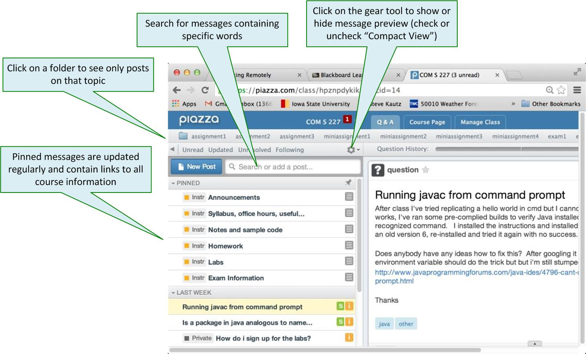

Getting Help in Com S 227
An important way of asking questions in a big course like this is to use an online discussion forum. We will be using a site called Piazza for this purpose. By posting your questions there, everyone can be involved and can benefit from the discussion. In many cases, you'll find that your question has already been answered.
If you have not already activated your Piazza account, please do so now, using your ISU email address.
The most useful Piazza page is the Q & A page, where the discussions appear. Certain important messages will be "Pinned" to the top of the Q & A page. Notice that here you can always find a link to the syllabus, containing all the TA and instructor office hours, for example.

Announcements
All course announcements will be made via Piazza. You are expected to check them regularly. Announcements will always appear on the Q & A page, labeled as "Instr Note", and you can find a summary of all announcements on the Course page. (You can switch between the Course page and the Q&A page using the tabs in the top toolbar.)Announcements that we believe to be urgent or important will also be sent as email (even if you have your email preferences set to "No email"; see below).
Folders
Discussion topics in Piazza are organized using special tags called folders. Here are the main folders we plan to use this semester: Whenever you post a question on Piazza, you'll be prompted to select one of the pre-defined folders for it. For example, here are the folders that we'll be using this semester:
general | General questions about the course |
java | Questions about Java or Eclipse |
miniassignment1, miniassignment2, etc. | Questions about the miniassignments |
assignment1, assignment2, etc. | Questions about the assignments |
exam1, exam2, final_exam | Questions about the exams |
labs | Questions about the labs |
Searching
You can easily find all posts related to a folder topic by clicking on the folder name in the toolbar at the top of the Q & A page. You can also search for a specific word or phrase using the search box.Questions and followup discussions
If you can't find an answer to your question among the existing discussions, you can post a new question. Try to formulate a question clearly so that other people can recognize what you're asking.In other cases, you might find that your question is answered, but that there are still things that need clarification. In this case, you can start a followup discussion within that post.
You also might find that you can answer, or clarify the answer to, an existing question, in which case you can edit the collective student answer.
Private and anonymous posts
Please do not post personal information or source code for an assignment on on Piazza. If you really can't ask your question without including part of your source code, make the post private (only instructors and TAs can see it).You can also post anonymously. There is some debate among professors as to whether there is such a thing as a Stupid Question (tm). However, if you are concerned that what you're asking might be a Stupid Question (tm), you have the option to post it anonymously.
Turning off emails from Piazza
- In the upper right corner of Piazza is a drop-down list next to your name. Select Account/Email settings.
- Under "Class and Email Settings", find Com S 227
- There is link called "Edit Email Notifications" in a small, blue font.
- Click on that link and edit.
Checkpoint 1
- Show the TA that you can display just the posts in the
labsfolder on Piazza. - Show the TA that you can search for the posts containing the word "obscuration".
- Demonstrate that you know when and where your TAs' office hours are.
- Demonstrate that you know the time of the last TA office hour at which you could have late checkpoints reviewed for credit (all TA office hours are listed in the syllabus).
- Explain to the TA what all the valid excuses are for missing a lab.